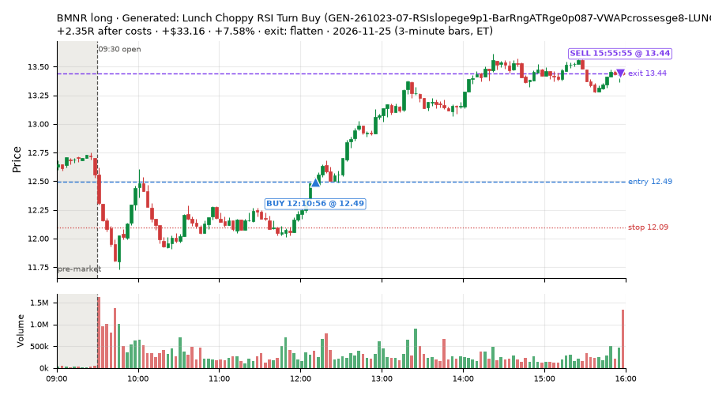
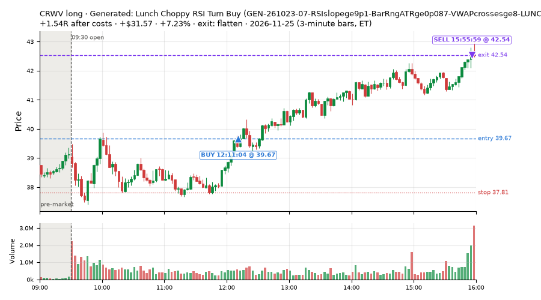
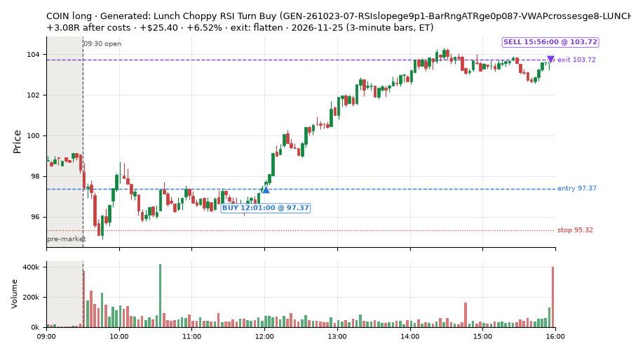
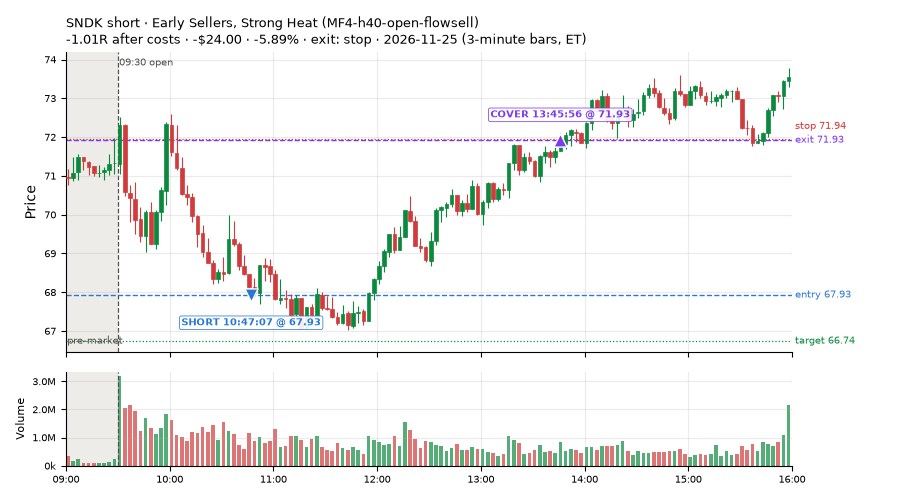
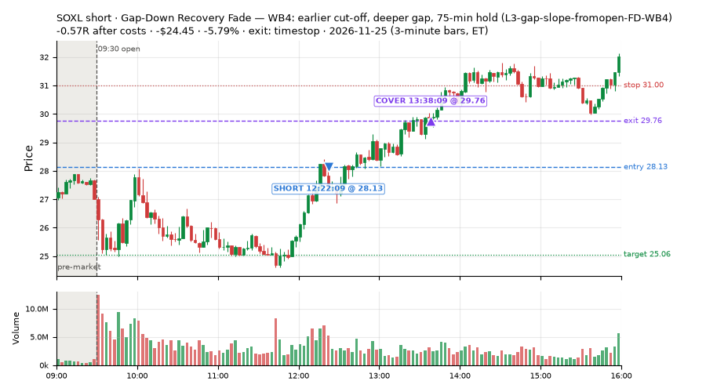
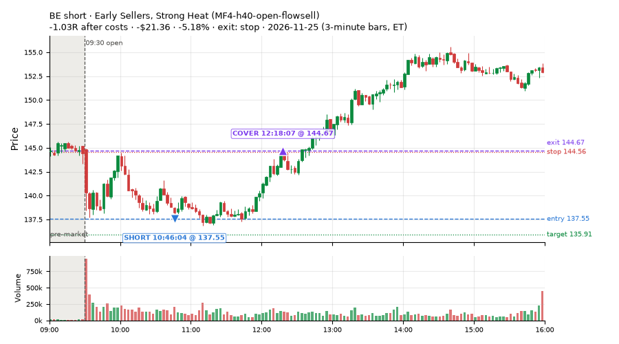
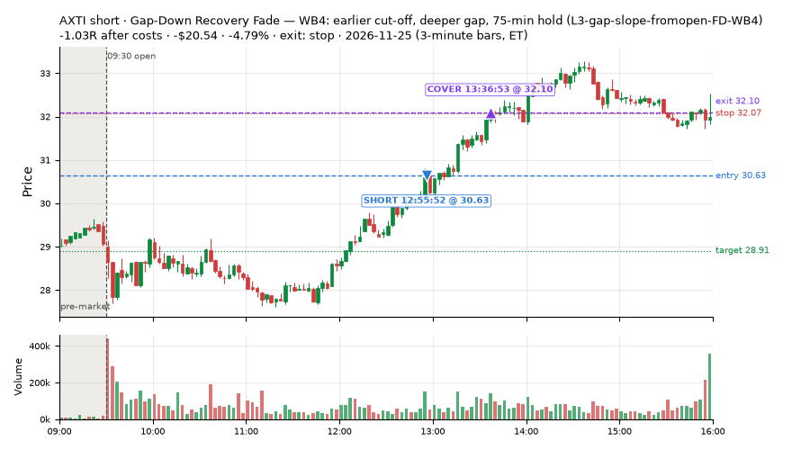
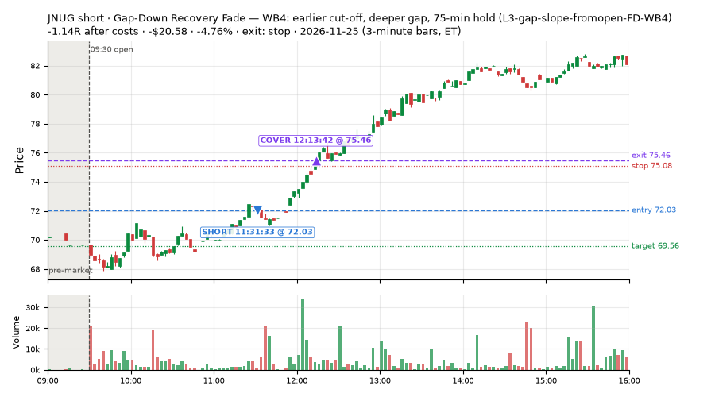

272 trades · win rate 21% · P/L $-1,299.07
PROBATION: no live setup has passed both locked test periods. 10 owner-directed setups added 2026-10-08 (MarcoFlow top 5 + 5 new), untested live. RW6G1 (RW6 + VWAP band guard) added 2026-10-09, probation.

| Symbol | Setup | Side | In | Out | Entry | Exit | Exit reason | % gained | P/L |
|---|---|---|---|---|---|---|---|---|---|
| BMNR | Generated: Lunch Choppy RSI Turn Buy (GEN-261023-07-RSIslopege9p1-BarRngATRge0p087-VWAPcrossesge8-LUNCH-BRvwgt0p7-hold-long) | long | 12:10 | 15:55 | 12.49 | 13.44 | flatten | +7.58% | $33.16 |
| CRWV | Generated: Lunch Choppy RSI Turn Buy (GEN-261023-07-RSIslopege9p1-BarRngATRge0p087-VWAPcrossesge8-LUNCH-BRvwgt0p7-hold-long) | long | 12:11 | 15:55 | 39.67 | 42.54 | flatten | +7.23% | $31.57 |
| COIN | Generated: Lunch Choppy RSI Turn Buy (GEN-261023-07-RSIslopege9p1-BarRngATRge0p087-VWAPcrossesge8-LUNCH-BRvwgt0p7-hold-long) | long | 12:01 | 15:56 | 97.37 | 103.72 | flatten | +6.52% | $25.40 |
| Symbol | Setup | Side | In | Out | Entry | Exit | Exit reason | % lost | P/L |
|---|---|---|---|---|---|---|---|---|---|
| SNDK | MF4-h40-open-flowsell | short | 10:47 | 13:45 | 67.93 | 71.93 | stop | -5.89% | $-24.00 |
| SOXL | L3-gap-slope-fromopen-FD-WB4 | short | 12:22 | 13:38 | 28.13 | 29.76 | timestop | -5.79% | $-24.45 |
| BE | MF4-h40-open-flowsell | short | 10:46 | 12:18 | 137.55 | 144.67 | stop | -5.18% | $-21.36 |
| AXTI | L3-gap-slope-fromopen-FD-WB4 | short | 12:55 | 13:36 | 30.63 | 32.10 | stop | -4.79% | $-20.54 |
| JNUG | L3-gap-slope-fromopen-FD-WB4 | short | 11:31 | 12:13 | 72.03 | 75.46 | stop | -4.76% | $-20.58 |








Signal to fill: median 2s, 90th percentile 4s (272 trades). Bars close each minute; the order follows the bar close.
Best excursion (MFE): median 0.28R; worst (MAE) median 1.04R. 46% of trades never got +0.25R in our favour; 10 reached +1R and still closed at or below 0.
| Symbol | Setup | Best R | Worst R | Closed R |
|---|---|---|---|---|
| AMZN | GEN-261019-01-VWAPxUp-ATRdge3p6-FromPCATRlem0p68-OPEN-BRvwgt0p7-t05s05-long | +3.33 | -1.61 | -1.34 |
| PWR | GEN-261019-01-VWAPxUp-ATRdge3p6-FromPCATRlem0p68-OPEN-BRvwgt0p7-t05s05-long | +1.21 | -1.10 | -1.56 |
| SNOW | NM-MF3-qqqdn-gapdn-FD | +1.53 | -1.14 | -1.07 |
| ARKK | GEN-261019-01-VWAPxUp-ATRdge3p6-FromPCATRlem0p68-OPEN-BRvwgt0p7-t05s05-long | +1.40 | -1.16 | -1.19 |
| AEM | GEN-261019-01-VWAPxUp-ATRdge3p6-FromPCATRlem0p68-OPEN-BRvwgt0p7-t05s05-long | +1.38 | -1.52 | -1.10 |
| Entry time | Trades | Win | Avg R | P/L |
|---|---|---|---|---|
| 09:50-10:30 | 41 | 7% | -1.05 | $-192.93 |
| 10:30-11:30 | 24 | 25% | -0.66 | $-100.30 |
| 11:30-13:00 | 197 | 22% | -0.38 | $-997.60 |
| 13:00-14:00 | 8 | 38% | -0.29 | $-13.30 |
| 14:00-16:00 | 2 | 50% | +0.27 | $5.06 |
| Setup | Trades | Win | Avg R after costs | Adj R (net of SPY) | Avg R ex-market (all sessions) | P/L |
|---|---|---|---|---|---|---|
| Generated: Open VWAP Reclaim Buy (down stock) (GEN-261019-01-VWAPxUp-ATRdge3p6-FromPCATRlem0p68-OPEN-BRvwgt0p7-t05s05-long) | 30.0 | 0% | -1.20 | -0.80 | -1.17 (beta +0.02, n 40) | $-98.41 |
| Generated: Lunch Choppy RSI Turn Buy (GEN-261023-07-RSIslopege9p1-BarRngATRge0p087-VWAPcrossesge8-LUNCH-BRvwgt0p7-hold-long) | 48.0 | 94% | +1.89 | -0.31 | -0.17 (beta +1.14, n 101) | $507.11 |
| Generated: Open Failed-Breakdown Short (GEN-261026-04-ORBfailDn-Ret15mlem0p55-SMA50dlem0p3-OPEN-BRvwgt0p5-holdtr-short) | 1.0 | 0% | -1.02 | -0.80 | -0.19 (beta -0.48, n 16) | $-23.25 |
| Generated: Midday Spike Fade (SPY down) (GEN-261028-07-Z12ge1p6-Eff6le0p034-MID-SPYltm0p25-hold-short) | 14.0 | 0% | -1.12 | -0.38 | -0.45 (beta -0.81, n 32) | $-72.82 |
| Generated: Lunch Quiet Breakout Buy (SPY up) (GEN-261029-04-Ret15mge0p54-RVolDayle0p59-VWAPcrossesle1-LUNCH-SPYgt0p25-hold-long) | 1.0 | 100% | +0.37 | -3.31 | +0.41 (beta -0.02, n 5) | $0.69 |
| Gap-Down Recovery Fade — WB4: earlier cut-off, deeper gap, 75-min hold (L3-gap-slope-fromopen-FD-WB4) | 140.0 | 0% | -1.07 | -0.76 | -0.80 (beta -0.20, n 171) | $-1,431.13 |
| Early Sellers, Mid-High RSI (all day) — WB3: skip rising 20-SMA / gap-ups > 2% + RSI 55-62 + heat -40..-30 + ADV $150M (MF2-open-rsimidhi-flowsell-FD-WB3) | 4.0 | 0% | -1.12 | -0.78 | -0.66 (beta -1.19, n 40) | $-32.28 |
| Early Sellers, Strong Heat (MF4-h40-open-flowsell) owner-directed; holdouts once: Sep-Oct -0.117R n147, Apr-Jun -0.017R n735 | 13.0 | 46% | -0.41 | -0.26 | -0.12 (beta -0.50, n 80) | $-75.89 |
| Gap-Down Capitulation Buy (near-miss) (NM-AR-AM-gapdown-capitulation-long) | 3.0 | 100% | +0.90 | +0.41 | -0.12 (beta +0.75, n 114) | $55.65 |
| Early Sellers into a Pop (index down, no gap up) (near-miss) (NM-MF3-qqqdn-gapdn-FD) | 3.0 | 0% | -1.11 | -0.32 | -0.12 (beta -0.55, n 84) | $-17.77 |
| Remedy-Q: Gap-Down Pop Fade, Heavy Selling, no entries after 12:30 (RW3-gapdn-rsi5pop-flowsell-short-FD-RQa-1230) | 6.0 | 0% | -1.18 | -0.21 | -0.30 (beta -0.62, n 19) | $-41.65 |
| Big Gainer Fade, VWAP Band Guard (all day) — WB3: from 11:00, stretched reclaim, liquid, no gap-up runners (RW6G1-ns2-up3-vwap2sd-short-FD-WB3) | 6.0 | 0% | -1.11 | -0.67 | -0.18 (beta -0.80, n 9) | $-73.12 |
| Afternoon Volatile Dip Buy (broad) (ULT-07-pm-volatile-dip-long) | 2.0 | 50% | +0.27 | +0.34 | +0.18 (beta +0.59, n 8) | $5.06 |
| RSI Collapse Buy, Down-Tape Guard (ULT-13-st7-sharp-long) | 1.0 | 0% | -0.19 | -0.51 | -0.13 (beta +0.36, n 14) | $-1.26 |
Market direction (SPY, beta 1) accounted for $-119.08 of today's $-1,299.07; the rest ($-1,179.99) came from the setups themselves. Avg R net of SPY: -0.61 (incl. a hedge leg's cost; report only).
20 setups live today. Today: 1214 signals, 272 taken, 22 lost because another setup held the symbol (2%). Since 2026-10-12 (33 sessions): 14798 signals, 7058 taken, 849 lost to other setups (6%). Peak open positions today 136 of 800 slots. Earnings blackout removed 118 symbols before scanning.
Simulated playing time (not live): 7717 what-if trades of signals not taken, avg -0.16R, 52% winners; of them 849 lost to another setup (avg -0.18R).
Silent: LD4-st4-breadthup-t1s05-long, GEN-261028-01-MACDhge0p12-Since950ATRlem0p25-LATE-SPYgt0p5-holdtr-long, LD8-spy-dip030-breadthturn-spxl-holdtr-long, GEN-261027-10-FlowShiftlem1p2-MACDhge0p079-SMA20dge0p59-LUNCH-BRopgt0p65-holdtr-long, LD1-ns1-breadthup-t05s1-long, CWT04-backside-lh-a25-short, CWT04-backside-vwaptest-a25-short · Crowded out: NS3-failed-vwap-reclaim-short-FD · Starved: exhaustion_short-FD, MF5-flowsell-vwapup-rsi5hi, NS5-sma50-flush-oversold-long-FD, RW4-ns3-adv150-short-FD, MF2-open-rsimidhi-flowsell
| Prio | Setup | Today sig / taken | Sessions | Signals / taken / trades | Taken/day | Expected/day | Lost to other setups | Lost to (setup n) | Top skip reasons | SIMULATED: not-taken n / avg R / win | Verdict |
|---|---|---|---|---|---|---|---|---|---|---|---|
| 1 | Remedy-Q: Gap-Down Pop Fade, Heavy Selling, no entries after 12:30 RW3-gapdn-rsi5pop-flowsell-short-FD-RQa-1230 | 9 / 6 | 3 | 34 / 19 / 19 | 6.33 | – | 1 | NM-AR-AM-gapdown-capitulation-long 1 | spread / quote / size 8, other 4, not shortable / shorts off 2 | 15 / -0.35R / 40% | ok 31.7 entries/week |
| 2 | Gap-Down Recovery Fade — WB4: earlier cut-off, deeper gap, 75-min hold L3-gap-slope-fromopen-FD-WB4 | 901 / 140 | 7 | 1194 / 171 / 171 | 24.43 | – | 24 | L3-gap-slope-fromopen-FD-WB4 20, GEN-261023-07-RSIslopege9p1-BarRngATRge0p087-VWAPcrossesge8-LUNCH-BRvwgt0p7-hold-long 4, RW6G1-ns2-up3-vwap2sd-short-FD-WB3 2 | other 503, not shortable / shorts off 269, spread / quote / size 227 | 1022 / -0.80R / 13% | ok 122.1 entries/week |
| 3 | Early Sellers, Mid-High RSI (all day) — WB3: skip rising 20-SMA / gap-ups > 2% + RSI 55-62 + heat -40..-30 + ADV $150M MF2-open-rsimidhi-flowsell-FD-WB3 | 8 / 4 | 7 | 89 / 40 / 40 | 5.71 | – | 2 | CWT14-failbrk-pdl-p05-R2A-long 2, CWT14-failbrk-pdl-p10-long 2 | other 22, spread / quote / size 20, symbol held by another setup 2 | 49 / -0.26R / 37% | ok 28.6 entries/week |
| 4 | Big Gainer Fade, VWAP Band Guard (all day) — WB3: from 11:00, stretched reclaim, liquid, no gap-up runners RW6G1-ns2-up3-vwap2sd-short-FD-WB3 | 8 / 6 | 7 | 21 / 9 / 9 | 1.29 | – | 0 | – | not shortable / shorts off 10, spread / quote / size 2 | 12 / +0.27R / 67% | slow 6.4 entries/week; ~9 weeks to 60 trades |
| 5 | Generated: Midday Spike Fade (SPY down) GEN-261028-07-Z12ge1p6-Eff6le0p034-MID-SPYltm0p25-hold-short | 21 / 14 | 8 | 51 / 32 / 32 | 4.00 | – | 0 | – | spread / quote / size 10, other 8, not shortable / shorts off 1 | 19 / -0.14R / 47% | ok 20.0 entries/week |
| 6 | Generated: Late Choppy Dip Buy (SPY down) GEN-261023-08-RSIslopelem5p5-VWAPcrossesge8-SMA50dlem1p7-LATE-SPYltm0p5-t1s1-long | 0 / 0 | 8 | 32 / 17 / 17 | 2.12 | – | 0 | – | spread / quote / size 7, other 6, price through stop/target 2 | 15 / -0.28R / 20% | slow 10.6 entries/week; ~6 weeks to 60 trades |
| 7 | Generated: PM Upper-Band Fade (weak mkt) GEN-261026-07-Flow3ge0p56-BBpctge0p98-ADX7le34-PM-BRvwlt0p3-holdtr-short | 0 / 0 | 8 | 297 / 163 / 163 | 20.38 | – | 8 | CWT14-failbrk-pdl-p05-R2A-long 4, CWT14-failbrk-pdl-p10-long 3, NM-AR-AM-gapdown-capitulation-long 1 | other 47, spread / quote / size 29, per-setup cap 26 | 134 / +0.23R / 62% | ok 101.9 entries/week |
| 8 | Generated: Open Failed-Breakdown Short GEN-261026-04-ORBfailDn-Ret15mlem0p55-SMA50dlem0p3-OPEN-BRvwgt0p5-holdtr-short | 2 / 1 | 8 | 31 / 16 / 16 | 2.00 | – | 0 | – | spread / quote / size 11, not shortable / shorts off 3, other 1 | 15 / -0.77R / 7% | slow 10.0 entries/week; ~6 weeks to 60 trades |
| 9 | Generated: Open Tight-Range Sell-Off Buy GEN-261020-08-FlowShiftlem0p41-Compress6le0p077-OPEN-QQQup-t05s05-long | 0 / 0 | 8 | 2 / 2 / 2 | 0.25 | – | 0 | – | – | 0 / – | slow 1.2 entries/week; ~48 weeks to 60 trades |
| 10 | Generated: Lunch Quiet Breakout Buy (SPY up) GEN-261029-04-Ret15mge0p54-RVolDayle0p59-VWAPcrossesle1-LUNCH-SPYgt0p25-hold-long | 5 / 1 | 8 | 15 / 5 / 5 | 0.62 | – | 0 | – | spread / quote / size 10 | 10 / +0.46R / 60% | slow 3.1 entries/week; ~19 weeks to 60 trades |
| 11 | Generated: Open VWAP Reclaim Buy (down stock) GEN-261019-01-VWAPxUp-ATRdge3p6-FromPCATRlem0p68-OPEN-BRvwgt0p7-t05s05-long | 99 / 30 | 8 | 128 / 40 / 40 | 5.00 | – | 0 | – | other 60, spread / quote / size 28 | 87 / -0.96R / 9% | ok 25.0 entries/week |
| 12 | Generated: Morning Upper-Wick Short (falling) GEN-261026-01-UpWickge0p59-Since950ATRlem0p61-AM-BRopgt0p5-holdtr-short | 0 / 0 | 8 | 8 / 3 / 3 | 0.38 | – | 1 | NM-AR-AM-gapdown-capitulation-long 1 | spread / quote / size 2, symbol held by another setup 1, not shortable / shorts off 1 | 5 / -0.53R / 40% | slow 1.9 entries/week; ~32 weeks to 60 trades |
| 13 | Generated: Lunch Choppy RSI Turn Buy GEN-261023-07-RSIslopege9p1-BarRngATRge0p087-VWAPcrossesge8-LUNCH-BRvwgt0p7-hold-long | 123 / 48 | 8 | 219 / 101 / 101 | 12.62 | – | 6 | NS3V1-am-widestop-short 2, GEN-261028-07-Z12ge1p6-Eff6le0p034-MID-SPYltm0p25-hold-short 2, exhaustion_short-FD 1 | other 85, spread / quote / size 27, symbol held by another setup 6 | 118 / +1.00R / 63% | ok 63.1 entries/week |
| 14 | Early Sellers into a Pop (index down, no gap up) (near-miss) NM-MF3-qqqdn-gapdn-FD | 4 / 3 | 26 | 163 / 84 / 84 | 3.23 | 4.90 | 7 | NM-AR-AM-gapdown-capitulation-long 7, CWT13-vwapstretch-z05-long 1 | spread / quote / size 39, not shortable / shorts off 18, other 15 | 79 / +0.13R / 54% | ok 16.2 entries/week |
| 15 | Early Sellers, Strong Heat MF4-h40-open-flowsell | 21 / 13 | 11 | 199 / 80 / 80 | 7.27 | 7.24 | 2 | CWT14-failbrk-pdl-p05-R2A-long 1, NM-AR-AM-gapdown-capitulation-long 1 | spread / quote / size 88, not shortable / shorts off 15, other 14 | 119 / +0.03R / 70% | ok 36.4 entries/week |
| 16 | Big Loser VWAP Reclaim Fade, Morning, Wide Stop NS3V1-am-widestop-short | 0 / 0 | 24 | 325 / 173 / 173 | 7.21 | 5.30 | 7 | NS3V1-am-widestop-short 7, NM-RWR3-ns3-qqqup-early-short 1, NM-RWN3-ns3-spyup-early-short 1 | spread / quote / size 97, not shortable / shorts off 45, symbol held by another setup 7 | 152 / +0.06R / 62% | ok 36.0 entries/week |
| 17 | Gap-Down Capitulation Buy (near-miss) NM-AR-AM-gapdown-capitulation-long | 8 / 3 | 28 | 186 / 114 / 114 | 4.07 | – | 7 | MF4-h40-open-flowsell 6, CWT14-failbrk-pdl-p05-R2A-short 1 | spread / quote / size 58, symbol held by another setup 7, other 7 | 72 / +0.08R / 54% | ok 20.4 entries/week |
| 18 | RSI Collapse Buy, Down-Tape Guard ULT-13-st7-sharp-long | 1 / 1 | 4 | 24 / 14 / 14 | 3.50 | – | 1 | GEN-261026-07-Flow3ge0p56-BBpctge0p98-ADX7le34-PM-BRvwlt0p3-holdtr-short 1 | spread / quote / size 9, symbol held by another setup 1 | 10 / -0.24R / 40% | ok 17.5 entries/week |
| 19 | Late-Day ETF Pop Fade (WB4 mirror) ULT-HV1-etf-late-pop-fade-short-X | 1 / 0 | 4 | 20 / 10 / 10 | 2.50 | – | 1 | GEN-261019-03-Ret15mATRlem0p12-FromOpenATRlem0p34-SMA20slopege0p29-PM-BRoplt0p5-t05s1-long 1 | not shortable / shorts off 9, symbol held by another setup 1 | 10 / -0.26R / 60% | slow 12.5 entries/week; ~5 weeks to 60 trades |
| 20 | Afternoon Volatile Dip Buy (broad) ULT-07-pm-volatile-dip-long | 3 / 2 | 4 | 10 / 8 / 8 | 2.00 | – | 0 | – | spread / quote / size 2 | 2 / +0.20R / 50% | slow 10.0 entries/week; ~6 weeks to 60 trades |
Every trade is attached as a CSV you can open and edit in Excel or Google Sheets. Live page: https://misiti15.github.io/MCF/live/